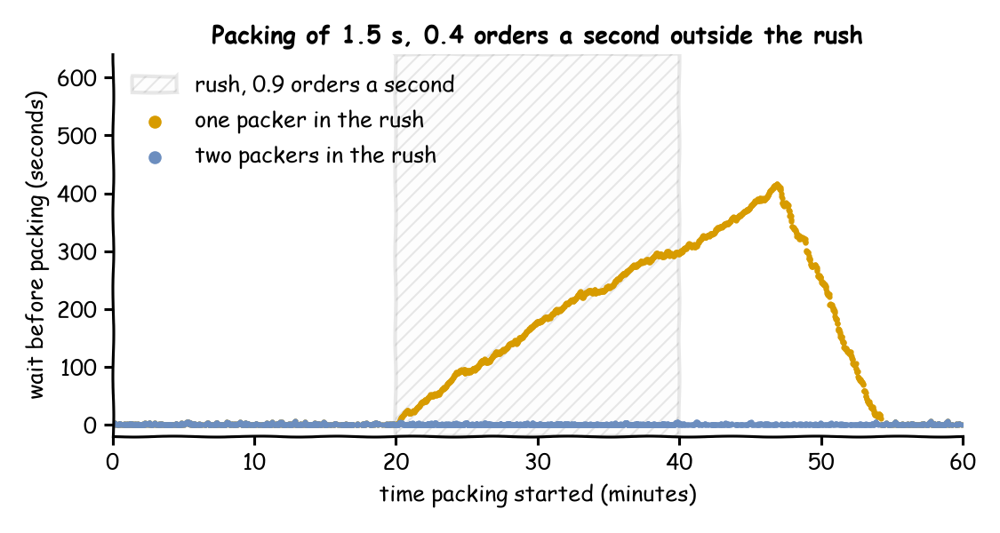

The shop's one packer packs an order in 1.5 seconds, so it can pack 40 orders a minute. Orders usually arrive every 2.5 seconds on average (24 a minute, rate: 0.4). From 20 to 40 minutes a promotion brings an order every 1.11 seconds on average (54 a minute, rate: 0.9), more than one packer can pack. This page asks: what does a 20-minute rush do to waits, and does a second packer for the rush keep them short?
Decision: one packer or two during the rush.
Measures: the mean and the longest wait over the hour, and the number of orders packed.
Runs: two runs of the hour, one with one packer in the rush and one with two, each with the seed 42.
Assumptions: orders arrive at random at each rate, every order takes the same time to pack, and the rush starts and ends exactly on time.
What You Will Learn
This page shows how to:
change the arrival rate and the number of packers at set times with a schedule;
measure what a rush that ends does to the waits;
choose what to report for an hour that is not steady.
What You Add
This page adds a schedule: changes to the arrival rate and the number of packers at set times. The shop is the one from First Simulation, with packing at a constant 1.5 seconds.
Write the Schedule
A schedule is a list of steps. Each step names a registry path, a value and the simulation time at which the value applies. The rush is four steps: the rate and the packers change at 20 minutes and change back at 40. Save the files from Full Files in one folder and run the commands there:
# The rush from 20 to 40 minutes: an order every 1.11 s on average (rate 0.9),# and RUSH_PACKERS packersscenario:-{at:20 min, path:Shop.arrival.orders.rate, value:0.9}-{at:20 min, path:Shop.resources.packers.current_cap, value:"${RUSH_PACKERS:-1}"}-{at:40 min, path:Shop.arrival.orders.rate, value:0.4}-{at:40 min, path:Shop.resources.packers.current_cap, value:1}
${RUSH_PACKERS:-1} reads the environment variable RUSH_PACKERS, so RUSH_PACKERS=2 desflow run changing_demand.yaml runs the second plan.
# The rush from 20 to 40 minutes: an order every 1.11 s on average (rate 0.9),# and rush_packers packers.add_scenario([{"at":"20 min","path":"Shop.arrival.orders.rate","value":0.9},{"at":"20 min","path":"Shop.resources.packers.current_cap","value":rush_packers,},{"at":"40 min","path":"Shop.arrival.orders.rate","value":0.4},{"at":"40 min","path":"Shop.resources.packers.current_cap","value":1,},])
defschedule(rush_packers):"""The rush from 20 to 40 minutes, with rush_packers packers. During the rush an order arrives every 1.11 s on average (rate 0.9). """return[{"at":1200,"path":"Shop.arrival.orders.rate","value":0.9},{"at":1200,"path":"Shop.resources.packers.current_cap","value":rush_packers,},{"at":2400,"path":"Shop.arrival.orders.rate","value":0.4},{"at":2400,"path":"Shop.resources.packers.current_cap","value":1},]
run_scenario is the SimPy process that applies the steps:
# Each step applies before every other event at its timeenv.process(run_scenario(env,schedule(rush_packers),until=3600))
The steps follow the simulation clock, so the schedule repeats exactly on every run and at any factor. A step applies before every other event at its time: the order that arrives at 20 minutes draws its next gap from the rush rate. Vary Arrivals by Time sets out these boundaries.
What You Get and Why
What does a 20-minute rush do to waits? With one packer, it builds a queue for the whole rush. In one run of the hour with the seed 42, the mean wait over the hour is 147.74 seconds and the longest 416.75 seconds, more than 6 minutes. A second packer for the rush keeps the mean at 0.74 seconds and the longest at 6.06. Both pack the same 1,978 orders:

Each tab prints both plans: the orders packed, the mean wait and the longest wait.
# One packer in the rush: orders packed, mean wait and longest waitdesflowrunchanging_demand.yaml--stdout|grep-E'pack_order\.(finished|wait_mean|wait_max)"'|tail-3
# Two packers in the rushRUSH_PACKERS=2desflowrunchanging_demand.yaml--stdout|grep-E'pack_order\.(finished|wait_mean|wait_max)"'|tail-3
1 in the rush: 1978 packed, mean wait 147.74 s, longest 416.75 s
2 in the rush: 1978 packed, mean wait 0.74 s, longest 6.06 s
During the rush one packer would need 0.9 × 1.5 = 1.35 seconds of packing every second, more than it has. Orders arrive at 54 a minute and the packer finishes at most 40, so the queue grows by about 14 orders a minute for as long as the rush lasts. An overload that ends is a finite overload. When the rush ends the load falls to 0.4 × 1.5 = 0.6, and the packer works off the queue, here by about 54 minutes. A load that stays at 1 or above is different: its queue grows for as long as the run lasts, and no run length gives a stable mean wait, as Queueing Basics explains.
A finite overload has an answer, but the answer depends on the schedule. A mean over the hour mixes the quiet minutes with the rush, so report the longest wait, or the waits during the rush, beside it. With two packers the rush load is 1.35 ÷ 2 = 0.68 for each packer, below 1, so waits stay short.
Key Takeaways
A schedule follows the simulation clock, so it repeats exactly on every run and at any pace.
An overload that ends builds a queue that clears only after the rush, so the waits stay high for a while.
A mean over the hour mixes the rush with quiet minutes, so report the longest wait, or the waits during the rush, beside it.
# The Changing Demand tutorial: a 20-minute rush, with one packer or two.# Run it with: desflow run changing_demand.yaml# With a second packer for the rush: RUSH_PACKERS=2 desflow run changing_demand.yamlsimulation:sim_id:Shopfactor:0random_seed:42resources:packers:{current_cap:1, max_cap:2}services:packing:{dist:constant, value:1.5 s}arrivals:orders:{dist:exponential, rate:0.4, spawn:pack_order}tasks:pack_order:service:packingresource:packerspayload:{event_type:order_packed}# The rush from 20 to 40 minutes: an order every 1.11 s on average (rate 0.9),# and RUSH_PACKERS packersscenario:-{at:20 min, path:Shop.arrival.orders.rate, value:0.9}-{at:20 min, path:Shop.resources.packers.current_cap, value:"${RUSH_PACKERS:-1}"}-{at:40 min, path:Shop.arrival.orders.rate, value:0.4}-{at:40 min, path:Shop.resources.packers.current_cap, value:1}# Orders packed, and the mean and longest wait, at the endstats:{level:typical, interval:2 h}egress:-type:Consolerun:until:1 h
"""The Changing Demand tutorial: a 20-minute rush, with one packer or two.One packer and 1.5 seconds of packing. An order arrives every 2.5 seconds on average(rate 0.4), and every 1.11 seconds (rate 0.9) from 20 to 40 minutes. Every record isprinted to the terminal, and the script prints the waits with one packer through therush and with a second packer for it. To see only those lines, run:python changing_demand.py 2>/dev/null"""importloggingfromdesflowimportConsoleEgress,SimulationContextlogging.basicConfig(level=logging.INFO,format="%(levelname)s [%(asctime)s] %(message)s")defshop(rush_packers:int)->SimulationContext:"""The shop of First Simulation, with a rush from 20 to 40 minutes."""app=(SimulationContext(sim_id="Shop",factor=0,random_seed=42).add_resource("packers",current_cap=1,max_cap=2).add_service("packing",dist="constant",value=1.5).add_arrival("orders",dist="exponential",rate=0.4)# The rush from 20 to 40 minutes: an order every 1.11 s on average (rate 0.9),# and rush_packers packers.add_scenario([{"at":"20 min","path":"Shop.arrival.orders.rate","value":0.9},{"at":"20 min","path":"Shop.resources.packers.current_cap","value":rush_packers,},{"at":"40 min","path":"Shop.arrival.orders.rate","value":0.4},{"at":"40 min","path":"Shop.resources.packers.current_cap","value":1,},])# Orders packed, and the mean and longest wait, at the end.with_stats("typical",interval=7200).add_egress(ConsoleEgress()))@app.task(service_id="packing",resource_id="packers")defpack_order(task_id:int):return{"event_type":"order_packed"}@app.arrival_loop("orders")deforder_generator(context:SimulationContext):task_id=0whileTrue:# The gap is drawn from the rate in force noworder=yieldcontext.wait_for_arrival("orders")context.spawn(pack_order(task_id,entity=order))task_id+=1returnappdefoutcomes(rush_packers:int)->dict:"""Runs the hour and returns the orders packed and their waits."""app=shop(rush_packers)app.run(until="1 h")r=app.env.stats.readings()name="Shop.stats.tasks.pack_order.{}".formatreturn{"finished":r[name("finished")],"wait_mean":r[name("wait_mean")],"wait_max":r[name("wait_max")],}if__name__=="__main__":forpackersin(1,2):r=outcomes(packers)print(f"{packers} in the rush: {r['finished']} packed, "f"mean wait {r['wait_mean']:5.2f} s, longest {r['wait_max']:6.2f} s")
"""The Changing Demand tutorial: a 20-minute rush, with one packer or two.One packer and 1.5 seconds of packing. An order arrives every 2.5 seconds on average(rate 0.4), and every 1.11 seconds (rate 0.9) from 20 to 40 minutes. Every record isprinted to the terminal, and the script prints the waits with one packer through therush and with a second packer for it. To see only those lines, run:python changing_demand_low_level.py 2>/dev/null"""importitertoolsimportloggingfromdesflowimport(CapacityConfig,ConsoleEgress,DistributionConfig,DynamicRealtimeEnvironment,DynamicResource,Sampler,SimParameter,run_scenario,)logging.basicConfig(level=logging.INFO,format="%(levelname)s [%(asctime)s] %(message)s")PARAMS=SimParameter(sim_id="Shop",arrival={"orders":DistributionConfig(dist="exponential",rate=0.4)},service={"packing":DistributionConfig(dist="constant",value=1.5)},resources={"packers":CapacityConfig(current_cap=1,max_cap=2)},)defschedule(rush_packers):"""The rush from 20 to 40 minutes, with rush_packers packers. During the rush an order arrives every 1.11 s on average (rate 0.9). """return[{"at":1200,"path":"Shop.arrival.orders.rate","value":0.9},{"at":1200,"path":"Shop.resources.packers.current_cap","value":rush_packers,},{"at":2400,"path":"Shop.arrival.orders.rate","value":0.4},{"at":2400,"path":"Shop.resources.packers.current_cap","value":1},]defpack_order(env,sampler,packers,key,task_id):path_id="Shop.service.packing"defpublish(value):env.publish_event(key,value,task="pack_order",instance=task_id)publish({"path_id":path_id,"status":"queued"})env.stats.task_queued("pack_order",task_id)withpackers.request()asrequest:yieldrequestpublish({"path_id":path_id,"status":"started"})env.stats.task_started("pack_order",task_id)yieldenv.timeout(sampler.sample(env.registry.get_config(path_id)))publish({"event_type":"order_packed"})env.stats.task_finished("pack_order",task_id)deforder_generator(env,sampler,packers):arrival=env.registry.get_config("Shop.arrival.orders")fortask_idinitertools.count():# The gap is drawn from the rate in force nowyieldenv.timeout(sampler.sample(arrival))key=f"orders-{task_id+1}"env.process(pack_order(env,sampler,packers,key,task_id))defrun(rush_packers=1,factor=0.0):env=DynamicRealtimeEnvironment(factor=factor)env.registry.register_sim_parameter(PARAMS)env.setup_egress([ConsoleEgress()])# Orders packed, and the mean and longest wait, at the endenv.setup_stats("Shop","typical",interval=7200)packers=DynamicResource(env,"Shop","packers")# Each step applies before every other event at its timeenv.process(run_scenario(env,schedule(rush_packers),until=3600))env.process(order_generator(env,Sampler(seed=42),packers))try:env.run(until=3600)finally:env.teardown()returnenvdefoutcomes(rush_packers:int)->dict:"""Runs the hour and returns the orders packed and their waits."""r=run(rush_packers).stats.readings()name="Shop.stats.tasks.pack_order.{}".formatreturn{"finished":r[name("finished")],"wait_mean":r[name("wait_mean")],"wait_max":r[name("wait_max")],}if__name__=="__main__":forpackersin(1,2):r=outcomes(packers)print(f"{packers} in the rush: {r['finished']} packed, "f"mean wait {r['wait_mean']:5.2f} s, longest {r['wait_max']:6.2f} s")